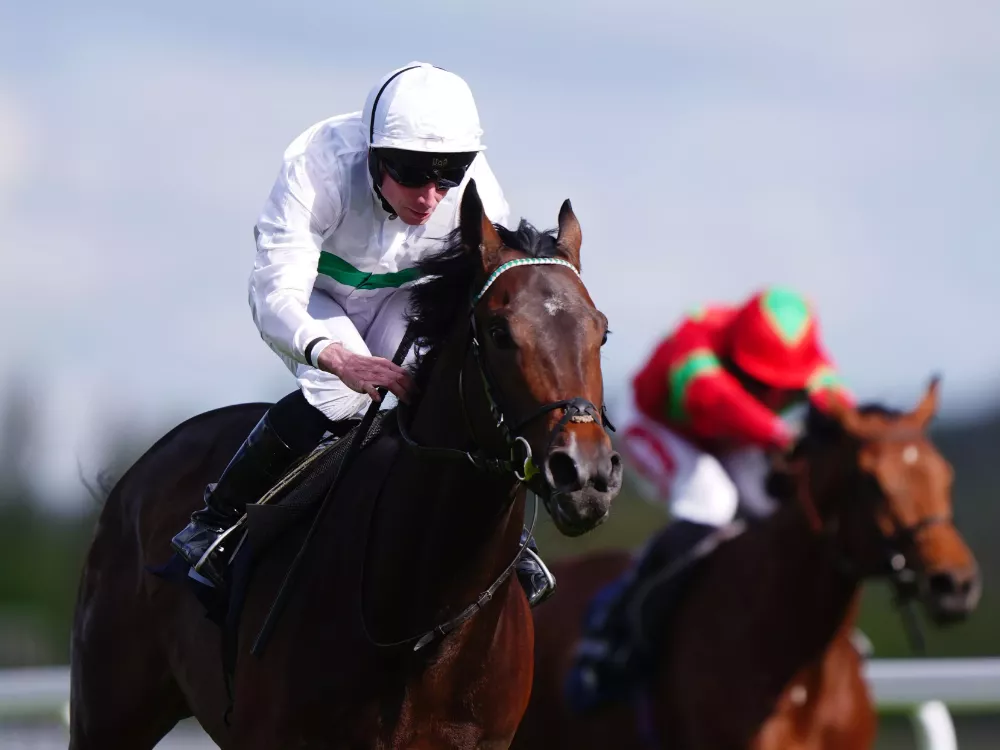

Water To Wine busca retomar la senda en Kempton tras perderse el Chester Vase
El prometedor hijo de Kingman regresa este viernes a las pistas en una prueba para noveles sobre la pista de arena de Kempton, con Royal Ascot como horizonte tras su victoria de debut en Newbury.

Foto: attheraces.com
Water To Wine, propiedad de George Strawbridge, reaparece este viernes en Kempton en una prueba para ejemplares de tres años en adelante sobre 10 furlongs y 219 yardas en pista sintética. El potro había generado expectación de cara al Derby tras su convincente victoria de debut en Newbury el mes pasado, aunque finalmente no tomó la salida en el Chester Vase, una de las preparatorias clásicas previstas en su agenda.
El hijo del semental Kingman vuelve ahora con un objetivo claro en el horizonte: Royal Ascot. Las conexiones del ejemplar confían en que esta salida en Kempton le permita recuperar el ritmo competitivo de cara a la cita del hipódromo berkshiriano, donde podría medirse en alguna de las pruebas de medio fondo para noveles. Su debut victorioso dejó buenas sensaciones, y el equipo busca confirmar ese potencial en una prueba que, aunque menor en exigencia, servirá para calibrar su estado de forma tras el parón forzado.
— Redacción de Galope al Día